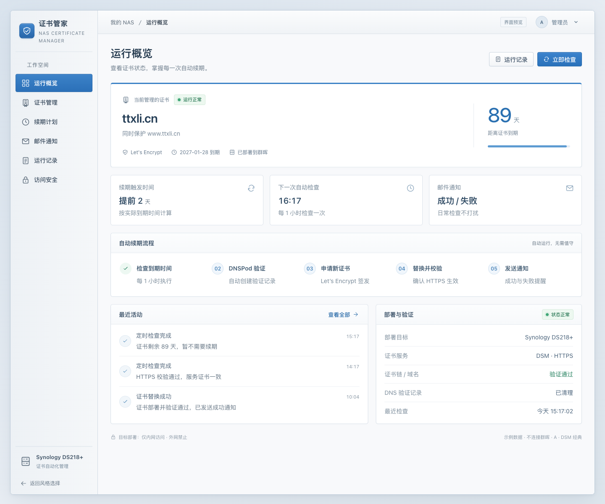
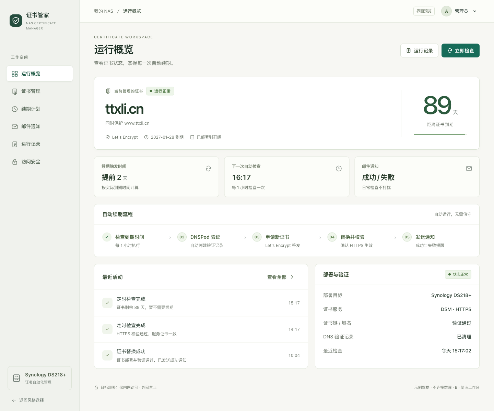
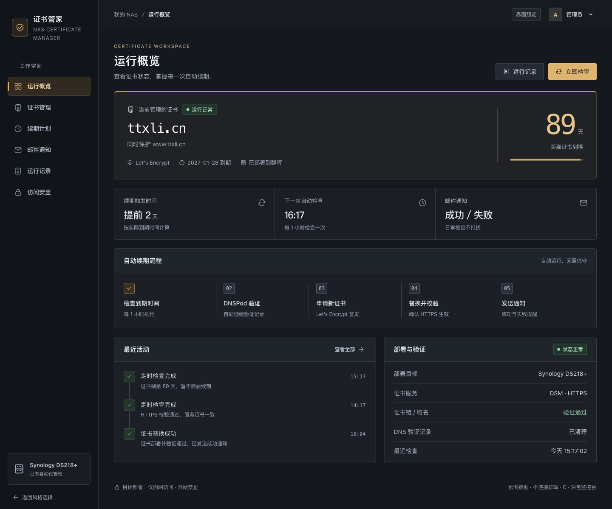

ONE WORKSPACE. THREE DIRECTIONS.
三种界面风格，同一套证书管理功能。点击进入，体验概览、续期配置、邮件通知和失败记录。

熟悉的蓝灰控制面板。功能排列紧凑，配置入口清楚，上手轻松。

暖白与青绿搭配，信息更舒展。突出到期时间与重要操作，阅读轻松。

炭灰底色搭配琥珀色重点。让运行状态、时间与异常记录更醒目。
修改提前续期天数、保存通知邮箱、筛选失败记录，或打开登录页面。三套预览功能一致，配置仅在当前页面内暂存。